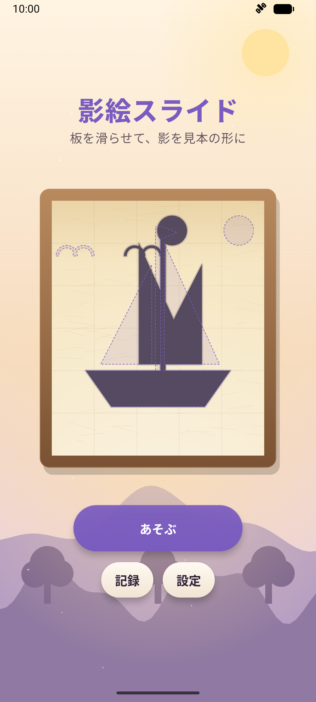
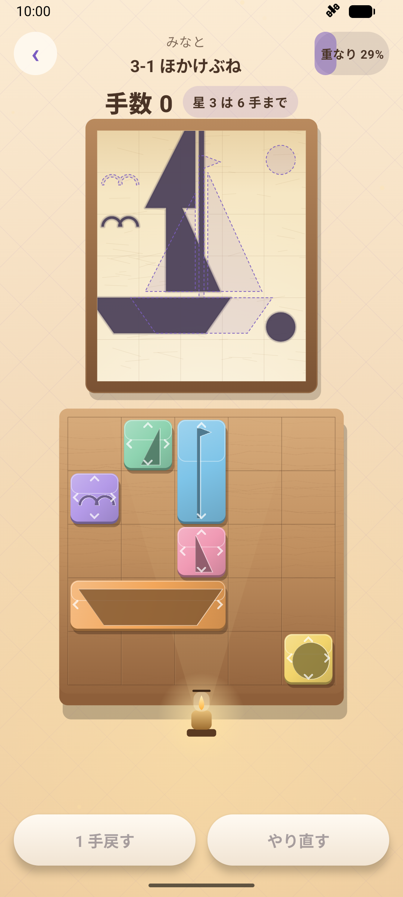
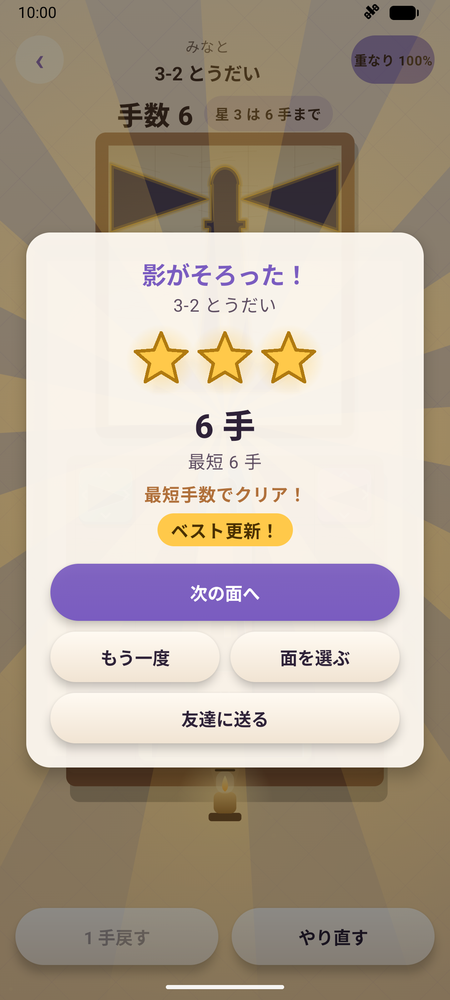
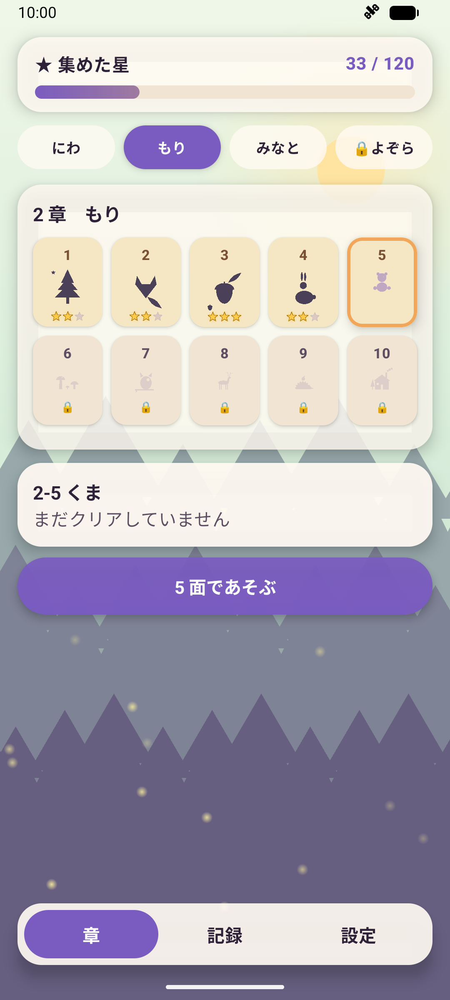
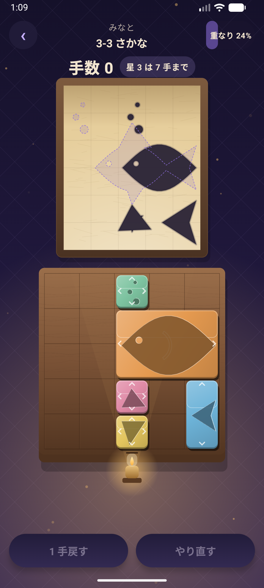
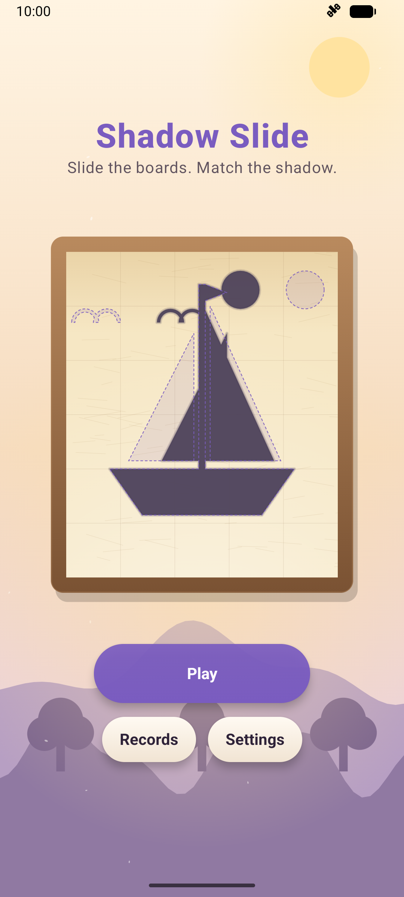
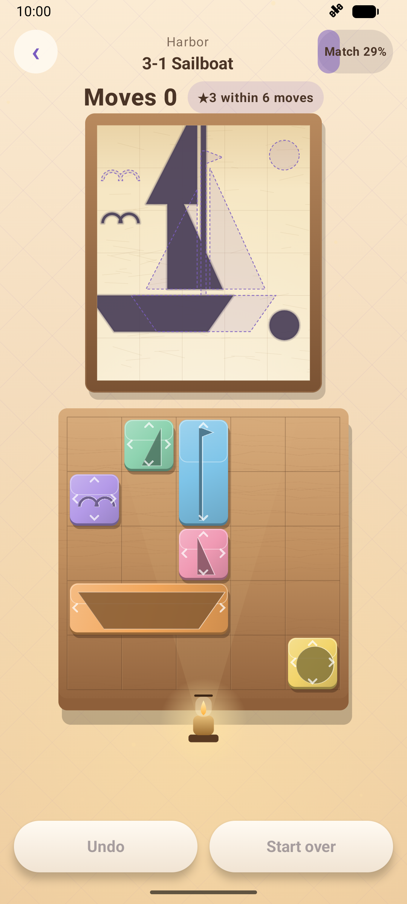
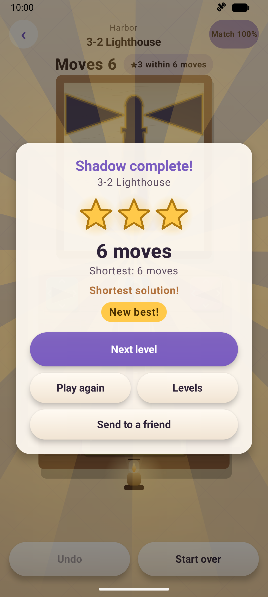
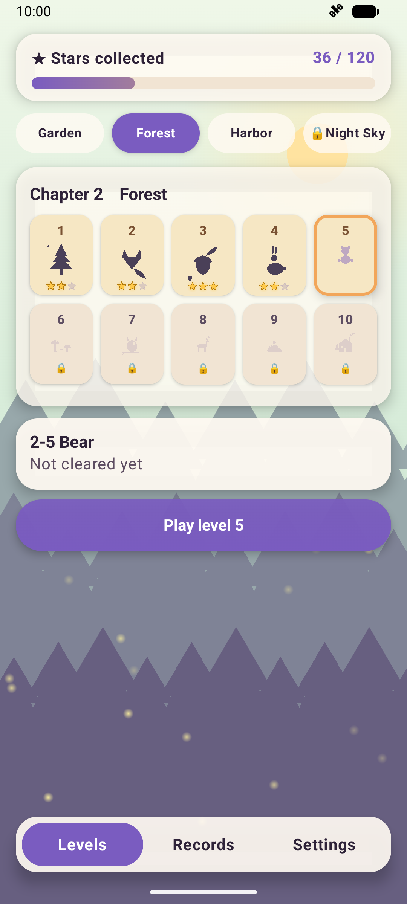

机の上の板を縦横に滑らせ、灯りに照らされた壁に映る影を、点線の見本の形にそろえるパズルゲームです。
お試し版を作っています。Google Play での配信はまだです。
板を 1 枚動かすと、壁の影もいっしょに動きます。帆かけ舟、灯台、ふくろう、夜汽車――少ない手数でそろえるほど星が増えます。1 手先を読むのが楽しいパズルです。





遊び方のページを読む（画面の画像つき）
A puzzle game where you slide wooden boards on a desk so their shadows on the lamp-lit wall match the dotted outline.
This is a trial version. It is not on Google Play yet.
Move one board and its shadow moves too. A sailboat, a lighthouse, an owl, a night train — the fewer moves you use, the more stars you earn.




How to play (Japanese only)